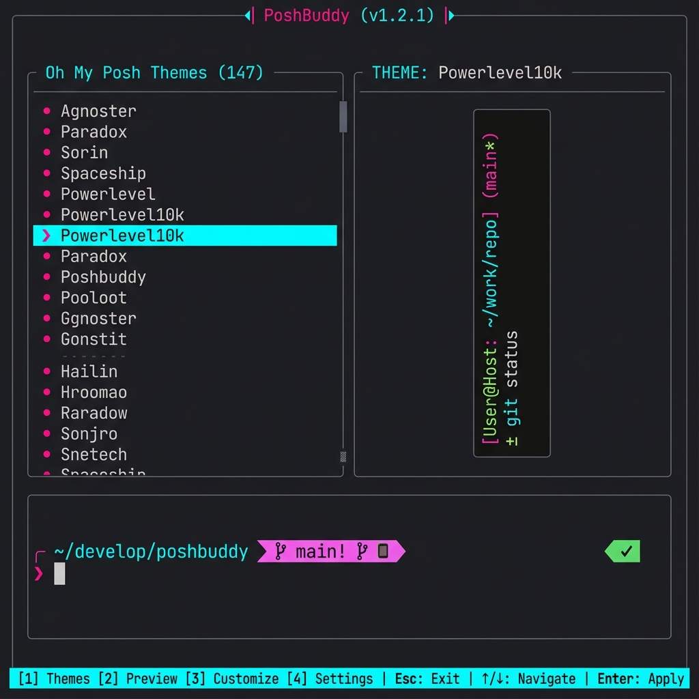

#[tokio::main]
async fn main() -> Result<(), Box<dyn std::error::Error>> {
let args = Cli::parse();
if let Some(command) = args.command {
// Run in Headless CLI Mode
cli::handle_command(command).await?;
} else {
// Initialize terminal raw mode and start Ratatui loop
crossterm::terminal::enable_raw_mode()?;
let stdout = std::io::stdout();
let backend = RatatuiBackend::new(stdout);
let mut terminal = Terminal::new(backend)?;
ui::run_tui_loop(&mut terminal).await?;
crossterm::terminal::disable_raw_mode()?;
}
Ok(())
}// Event loop processing service messages in background
pub async fn start_event_loop(
mut rx: mpsc::Receiver<AppMessage>,
state: Arc<Mutex<AppState>>
) {
while let Some(msg) = rx.recv().await {
match msg {
AppMessage::ThemeApplied(name) => {
let mut s = state.lock().await;
s.active_theme = name;
s.status = "Theme applied successfully".into();
}
AppMessage::NetworkTimeout => {
let mut s = state.lock().await;
s.status = "Network request timed out (10s limit)".into();
}
// Add diagnostics, fonts, and backup states here...
}
}
}pub async fn set_theme(
theme_name: &str,
profile_path: &Path
) -> Result<(), ServiceError> {
// Ensure backup is performed first before modifying profile!
backup::create_snapshot(profile_path).await?;
let theme_json = fetch_theme_catalog(theme_name).await?;
let marker_content = format!(
"# PoshBuddy Start\n$env:POSH_THEME = \"{}\"\n# PoshBuddy End",
theme_name
);
inject_profile_markers(profile_path, &marker_content).await?;
Ok(())
}pub async fn create_snapshot(profile: &Path) -> io::Result<PathBuf> {
if !profile.exists() {
return Ok(PathBuf::new());
}
let timestamp = chrono::Local::now().format("%Y%m%d%H%M%S");
let backup_path = profile.with_extension(format!("backup.{}", timestamp));
tokio::fs::copy(profile, &backup_path).await?;
Ok(backup_path)
}poshbuddy [OPTION]...
A high-performance system utility written in Rust to automate theme management, segment customization, and diagnostics for Oh My Posh environments.
poshbuddy acts as an abstraction controller for Oh My Posh. It automatically locates your shell profiles, verifies fonts, connects to the theme asset registries, and updates profile settings with zero manual scripting.
By default, executing poshbuddy with no arguments initializes the interactive Terminal User Interface (TUI). Specifying commands runs PoshBuddy in Headless CLI Mode for quick scripting or configurations.
When running inside the interactive Ratatui interface, the following keys control view routing and process actions:
| Key | Description of Action |
|---|---|
| 1 | Themes Explorer — Browse, search, and live-preview 240+ themes. |
| 2 | Font Manager — List and install compatible Nerd Fonts. |
| 3 | Segment Manager — Toggle prompts segments (e.g. Git, CPU, Battery, Time) surgically. |
| B | Backup Snapshots — List and rollback PowerShell profile configurations. |
| D | System Diagnostics — Verify theme catalog versions, CLI versions, and font integrity. |
| H / Esc | Return to main Dashboard. |
| Q | Gracefully exit PoshBuddy. |
Automate prompt deployments using the standard command line arguments:
| Command Structure | Purpose & Output |
|---|---|
poshbuddy set theme <theme> |
Inject a specified theme into the profile, performing backups and writing marker blocks. |
poshbuddy install font <font> |
Fetch and install a Nerd Font archive from official repositories. |
poshbuddy list themes [--local | --remote] |
Format a dense list table of available local/remote OMP templates. |
poshbuddy list fonts |
Display a list of Nerd Fonts compatible with terminal renderings. |
1. Environmental Configuration: It is highly recommended to run the Diagnostic view [D] on clean environments. If Nerd Fonts or Oh My Posh binaries are not detected, the installation interfaces will guide automated downloads.
2. Marker Verification: PoshBuddy writes variables into shell profiles wrapped inside marker comment pairs. If you wish to uninstall or replace PoshBuddy's control, simply remove the blocks starting with # PoshBuddy Start and ending with # PoshBuddy End. The engine will safely ignore profiles lacking these markers.
3. Safeguard Snapshots: Under the hood, any edit triggers an automatic backup inside `docs/olds/` or the profile directory with a timestamp suffix (e.g. .backup.20260603072810). You can list and restore these via the TUI backup manager screen at any point.
Runtime Dependencies:
winget install JanDeDobbeleer.OhMyPosh (Windows), brew install jandedobbeleer/oh-my-posh/oh-my-posh (macOS), or the official script.Build Dependencies (from source): Rust 1.85+, Git.
Use this checklist when setting up PoshBuddy on a new system:
| # | Step | Description |
|---|---|---|
| 1 | Install Oh My Posh | Use winget, brew, or the official install script from the Oh My Posh docs. |
| 2 | Configure Nerd Font | Install a Nerd Font and set it as the terminal font. Use poshbuddy install font if needed. |
| 3 | Install Rust | If building from source: curl --proto '=https' --tlsv1.2 -sSf https://sh.rustup.rs | sh |
| 4 | Install PoshBuddy | cargo install poshbuddy or download a release binary. |
| 5 | Run Diagnostics | Launch poshbuddy and press [D] to verify the environment. |
| 6 | Browse Theme Catalog | Press [1] to explore themes. Filter by name with the search bar. |
| 7 | Apply a Theme | Select a theme and press Enter to apply. A backup is created automatically. |
| 8 | Source Profile | Run . \$PROFILE (PowerShell) or source ~/.bashrc (Bash) to see the prompt. |
| Symptom | Likely Cause | Resolution |
|---|---|---|
| Broken icons / squares | Nerd Font not configured in terminal | poshbuddy install font FiraCode then set terminal font |
| Theme not applying | Profile markers missing or corrupted | Run Diagnostic [D], use Backup Manager [V] to restore |
| Static theme preview | PowerShell 7 not installed | Install PowerShell 7 from github.com/PowerShell/PowerShell |
| Terminal latency | Too many active segments | Use Segment Manager [3] to disable unused segments |
| No internet connection | Network unreachable, timeout exceeded | PoshBuddy falls back to offline mode. Use --offline flag to skip network checks. |
| Timeout generating preview | Theme JSON too large or shell startup slow | Simplify theme, reduce segment count, or use a lighter theme |
The error lifecycle follows a strict recovery pipeline: Error → Log → Diagnostic scan → Remediation suggestion → Retry. If issues persist, open a ticket on GitHub with the diagnostic output.
PoshBuddy is structured as an asynchronous, event-driven Rust application. The system is composed of three core layers:
1. Application State (app/mod.rs + app/handlers.rs):
Maintains a reactive model of the UI state. The AppMessage enum carries events (theme applied, timeout, font installed) across Tokio mpsc channels. The handler layer bridges user input to service actions without blocking the UI redraw cycle.
2. Service Layer (app/services.rs):
Business logic for theme fetching (Reqwest + Serde JSON), profile injection (marker-based algorithm), font installation (zip extraction), backup management (timestamped snapshots), and diagnostics. Each operation runs asynchronously on Tokio tasks.
3. Terminal UI (ui/):
Built on Ratatui v0.30 with Crossterm backend. The drawing loop runs on the main thread while service tasks communicate via mpsc channels. Views include Welcome Dashboard, Themes Explorer, Font Manager, Segment Manager, Backup Manager, and Diagnostics.
See Workspace 3 for the interactive architecture diagram with detailed component descriptions.